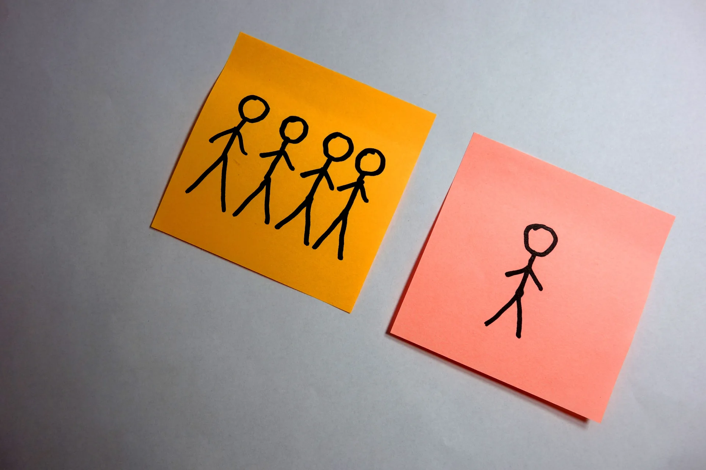

We've all been isolated from many family members and friends during the pandemic. If you've been having a harder time remembering things or processing information since the pandemic began, it could be an isolation side effect.
"It's something I'm seeing clinically. Some people were okay before the pandemic and now they're having faster cognitive decline," says Dr. Joel Salinas, a behavioral neurologist and faculty member of the Harvard Center for Population and Development Studies.
Dr. Salinas says we don't have a lot of evidence yet to back up a clear association between
pandemic lockdowns and a change in memory or thinking skills. One small 2020 study found
that 60% of people with mild cognitive impairment or Alzheimer's disease experienced
worsening cognition and delirium during the lockdown.
"
It is an absolute human certainty that no one can know his own
beauty or perceive a sense of his own worth until it has been reflected
back to him in the mirror of another loving, caring human being.
"
Isolation (being cut off from social contact) was a problem for older adults long
before the pandemic began. Life circumstances — such as living far from
friends and family, losing a partner, or being unable to drive — often
create unanticipated situations in which we find ourselves isolated.
That sometimes puts health in jeopardy. "In studies of people, isolation is associated with an increased risk for dementia, although it's unclear how high the risk is," Dr. Salinas says.
"In lab animals, isolation has been shown to cause
brain shrinkage and the kind of brain changes you'd see
in Alzheimer's disease — reduced brain cell connections and reduced
levels of brain-derived neurotrophic factor, which is important for the
formation, connection, and repair of brain cells."

If you feel that cognitive change you're experiencing may be the result of isolation, try to reach out to others. That can be challenging during the pandemic, but several options can help.
Use video or social apps. They enable you to see and chat with friends or meet people who share your interests in an online class or club.
"If you're unfamiliar with the technology, take it upon yourself to find someone who can teach you," Dr. Salinas advises.
Pick up the phone. Reconnect with old friends. "Research suggests that phone calls can be as helpful as having a virtual exchange or meeting in person," Dr. Salinas says.